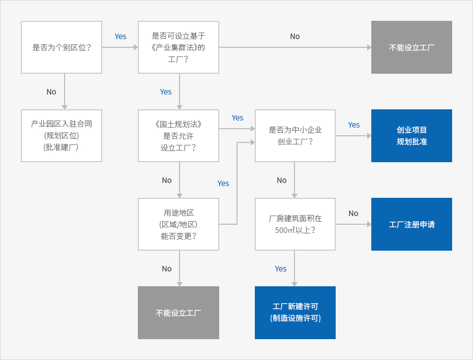

工业选址和个别选址
- Home
- 经营与生活
- 设立工厂
- 工业选址和个别选址
为了生产产品而需要设立制造业工厂的，根据区位不同，工厂设立程序及审批许可也不同。在个别区位设立工厂时，审批许可程序复杂，而在产业园区等为顺利发展制造业而建立的特别地区，工厂设立周期较短，审批许可程序简单。特别是不产生环境有害物质的小规模项目，无需注册工厂，就可以从事制造业。
对于是否可以在相应用地上设立工厂的土地使用限制、是否可以建厂、有无环境相关政策等，应该进行如下探讨：



产业区位和个别区位
韩国为了有效确保产业的生产及活动空间，帮助企业选择优秀的区位，实行产业区位政策。为进行系统和有序的管理，通过政策鼓励在产业园区设立工厂。但是，由于项目条件、土地价格等企业内部原因，不适合在产业园区建厂的，可以购买个别用地，取得必要的审批后建立工厂。
产业园区
产业园区是在为产业设施、劳动者及使用者设置共同服务设施的综合规划下划定和开发的地区，帮助企业确保工厂用地，通过产业集群确保合作企业及人力，顺利提供原材料、配件供应等便利。最近，产业园区追求综合开发，致力于建立产学研合作体系，对多种服务设施进行联合布局。
根据建设目的的不同，产业园区的区位类型也多种多样，与建厂相关的行业管理方式也与个别区位存在差异。首先，即使同为制造业，不同区位的可入驻行业也不同，推进各自园区发展的运营和管理规定也不同。例如，产业园区、外商投资区(园区型)和国家食品集群按照各园区的“管理基本计划”运作区位，而经济自由区、新万金地区和研究开发特区等则遵循不同法规。《自由贸易区划定与运营法》规定了自由贸易区的入驻资格。
个别区位
个别区位是指除了有计划地指定和开发的地区以外的所有地区。因此，企业因内部原因而购入或租用产业园区以外的土地或城市、居住区的建筑物时，需要直接取得用途变更审批许可，然后方可设立工厂。
如果为了发展制造业项目而选择个别区位，可入驻《建筑法实施令》所规定建筑种类中的工厂及第二类邻近生活设施(制造企业)。但是，全国的土地都根据《国土规划利用法》规定了“用途”，而且按照用途限制行为类型。如果计划新建建筑物，应首先确认《国土规划及利用相关法律》及地方自治团体条例中规定的建筑物用途和各用途地区的行为限制。如果是无法建造工厂的用途地区，可以通过调整市郡管理规划变更其用途，但这需要经过城市规划委员会的审议等程序。各用途地区的可入驻行业详见《工厂区位标准公告》或《国土规划利用法实施令》附表。
产业园区和个别区位的优缺点
| 类别 | 产业园区 | 个别区位 |
|---|---|---|
| 优点 |
|
|
| 缺点 |
|
|